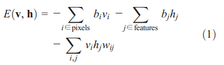
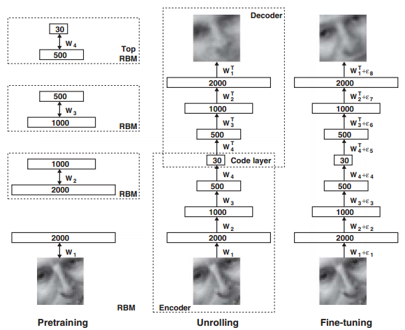
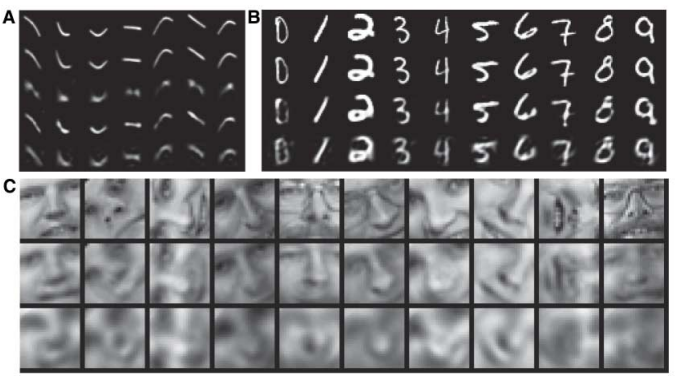

Deep learning：三十四(用NN实现数据的降维)
数据降维的重要性就不必说了，而用NN（神经网络）来对数据进行大量的降维是从2006开始的，这起源于2006年science上的一篇文章：reducing the dimensionality of data with neural networks，作者就是鼎鼎有名的Hinton，这篇文章也标志着deep learning进入火热的时代。
今天花了点时间读了下这篇文章，下面是一点笔记：
多层感知机其实在上世纪已经被提出来了，但是为什么它没有得到广泛应用呢？其原因在于对多层非线性网络进行权值优化时很难得到全局的参数。因为一般使用数值优化算法（比如BP算法）时需要随机给网络赋一个值，而当这个权值太大的话，就很容易收敛到”差”的局部收敛点，权值太小的话则在进行误差反向传递时离输入层越近的权值更新越慢，因此优化问题是多层NN没有大规模应用的原因。而本文的作者设计出来的autoencoder深度网络确能够较快的找到比较好的全局最优点，它是用无监督的方法（这里是RBM）先分开对每层网络进行训练，然后将它当做是初始值来微调。这种方法被认为是对PCA的一个非线性泛化方法。
每一层网络的预训练都采用的是RBM方法，关于RBM的简单介绍可以参考前面的博文：Deep learning：十九(RBM简单理解)，其主要思想是是利用能量函数，如下：

给定一张输入图像（暂时是以二值图像为例），我们可以通过调整网络的权值和偏置值使得网络对该输入图像的能量最低。
文章说单层的二值网络不足以模拟大量的数据集，因此一般采用多层网络，即把第一层网络的输出作为第二层网络的输入。并且每增加一个网络层，就会提高网络对输入数据重构的log下界概率值，且上层的网络能够提取出其下层网络更高阶的特征。
图像的预训练和微调，编码和解码的示意图如下：

由上图可以看到，当网络的预训练过程完成后，我们需要把解码部分重新拿回来展开构成整个网络，然后用真实的数据作为样本标签来微调网络的参数。
当网络的输入数据是连续值时，只需将可视层的二进制值改为服从方差为1的高斯分布即可，而第一个隐含层的输出仍然为二进制变量。
文章中包含了多个实验部分，有手写数字体的识别，人脸图像的压缩，新闻主题的提取等。在这些实验的分层训练过程中，其第一个RBM网络的输入层都是其对应的真实数据，且将值归一化到了（0,1）.而其它RBM的输入层都是上一个RBM网络输出层的概率值；但是在实际的网络结构中，除了最底层的输入层和最顶层RBM的隐含层是连续值外，其它所有层都是一个二值随机变量。此时最顶层RBM的隐含层是一个高斯分布的随机变量，其均值由该RBM的输入值决定，方差为1。
实验结果1：

这3副图中每幅图的最上面一层是原图，其后面跟着的是用NN重构的图，以及PCA重构的图（可以选取主成分数量不同的PCA和logicPCA或者标准PCA的组合，本人对这logicPCA没有仔细去研究过）。其中左上角那副图是用NN将一个784维的数据直接降到6维！
作者通过实验还发现：如果网络的深度浅到只有1个隐含层时，这时候可以不用对网络进行预训练也同样可以达到很好的效果，但是对网络用RBM进行预训练可以节省后面用BP训练的时间。另外，当网络中参数的个数是相同时，深层网络比浅层网络在测试数据上的重构误差更小，但仅限于两者参数个数相同时。作者在MINIST手写数字识别库中，用的是4个隐含层的网络结构，维数依次为784-500-500-2000-10，其识别误差率减小至1.2%。预训时练得到的网络权值占最终识别率的主要部分，因为预训练中已经隐含了数据的内部结构，而微调时用的标签数据只对参数起到稍许的作用。
参考资料：
reducing the dimensionality of data with neural networks


当网络的输入数据是连续值时，只需将可视层的二进制值改为服从方差为1的高斯分布即可? 我试着这样改，结果输出很多白块....晕倒。。。。。
v0-h0-v1-h1, 用来计算h0?
negdata = logistic(nhstates*W' + repmat(c,numcases,1)); %%%visible data
negdatastates = negdata > rand(numcases,numdims);
%%%current equation
negdata = normpdf(1, nhstates*W' + repmat(c,numcases,1),1);
negdatastates = logistic((lamd/delta2)*(negdata*W + repmat(b,numcases,1)));